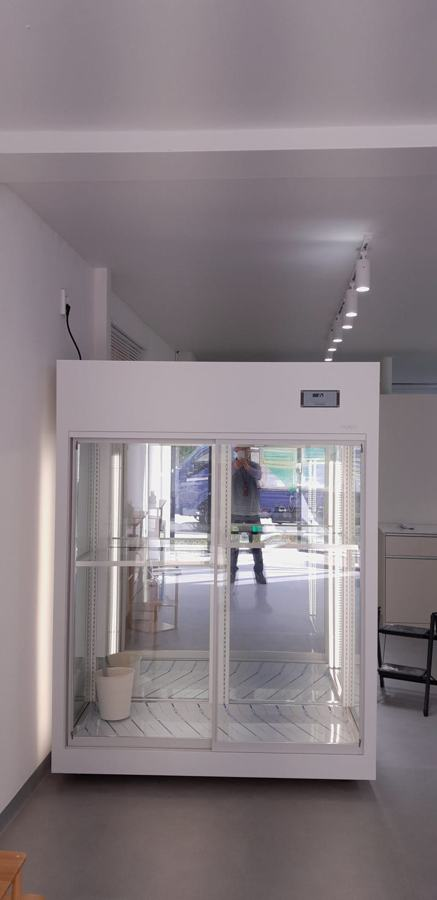
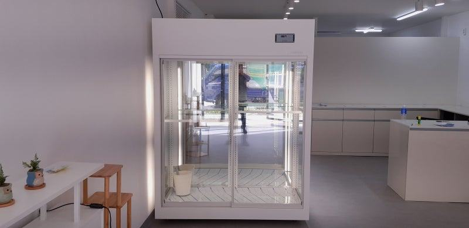
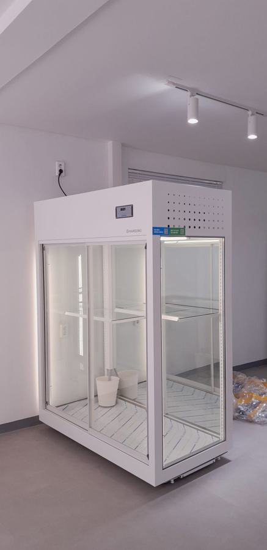
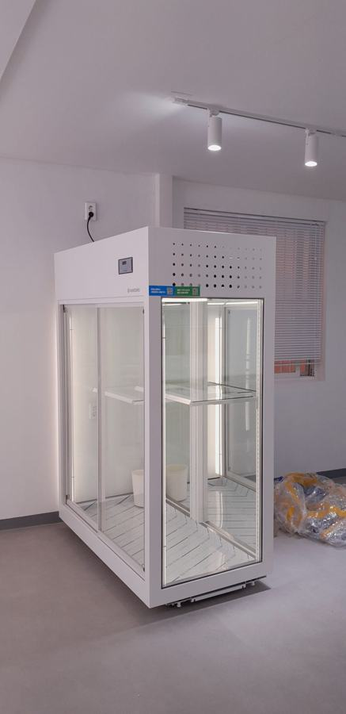
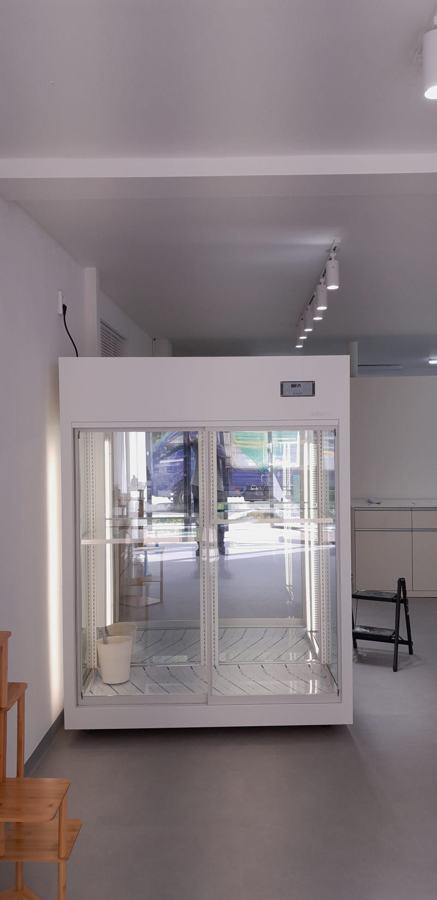
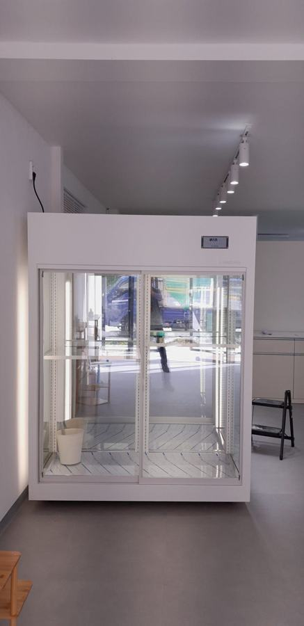
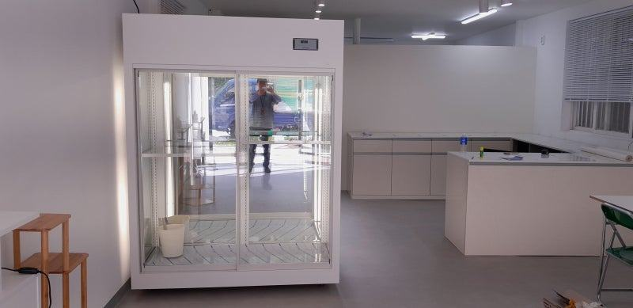
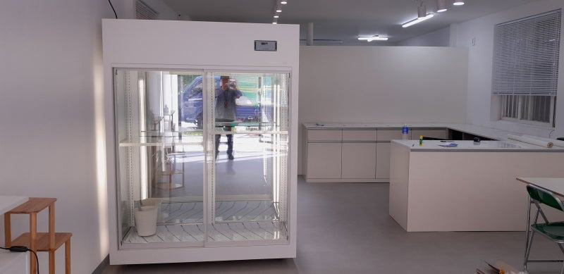
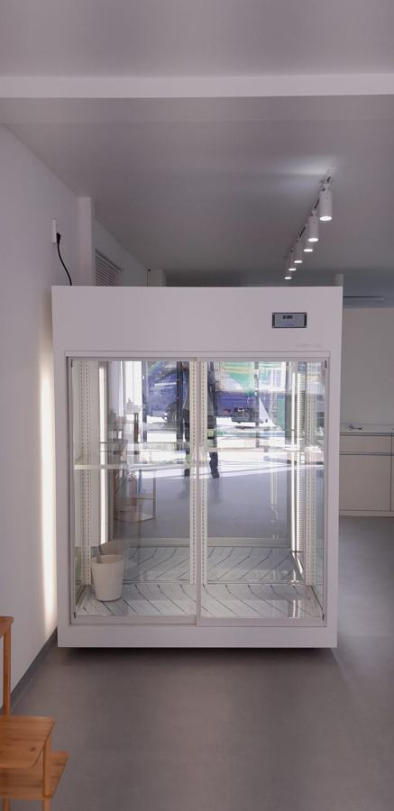

꽃냉장고
꽃냉장고 냉동겸용, 한 대로 쓰기 전에 알아야 할 온도 차이

생화는 일반적으로 5℃에서 10℃ 사이에서 보관해야 해서, 영하로 내려가는 냉동 구역과 한 칸을 같이 쓰면 꽃잎이 냉해를 입기 쉽습니다. 냉동이 꼭 필요하다면 칸과 냉각을 분리한 구성으로 맞추거나 따로 두는 것이 꽃을 지키는 방법입니다.
안녕하세요. 꽃집 쇼케이스를 직접 설계하고 제작하는 한성쇼케이스입니다.
플라워 카페나 꽃과 디저트를 함께 파는 매장 사장님들께 이런 문의를 종종 받습니다. "자리가 좁아서 꽃냉장고 한 대에 냉동 칸도 같이 넣을 수 없을까요?" 공간을 아끼고 싶은 마음은 충분히 이해가 됩니다.
다만 꽃은 살아 있는 상품이라 음식처럼 차가울수록 오래가는 것이 아닙니다. 너무 낮은 온도는 오히려 꽃잎을 상하게 하고, 냉동 칸에서 새어 나오는 냉기 하나로도 가까운 꽃이 먼저 시들 수 있습니다.
오늘은 꽃냉장고를 냉동겸용으로 고민하실 때 꼭 알아 두셔야 할 온도 차이와, 두 가지가 다 필요할 때 어떻게 구성하면 되는지 정리해 보겠습니다.
1. 생화가 견디는 온도 범위
꽃은 수확 후에도 호흡을 계속합니다. 온도가 조금만 높아도 호흡이 빨라져 금방 시들고, 반대로 너무 낮으면 꽃잎에 냉해가 생깁니다.
그래서 일반적인 생화 보관에는 5℃에서 10℃ 사이를 권해 드립니다.
꽃 종류마다 차이도 있습니다. 대부분의 절화는 이 범위 안에서 무난하지만, 열대 식물과 난류는 낮은 온도에 약해 조금 더 높게 맞춰야 합니다.
출고 직전처럼 잠시 신진대사를 늦추고 싶을 때만 조금 더 낮춰 쓰기도 합니다.
- 판매하는 꽃 중 난류·열대 식물이 있는지 확인하세요.
- 계절에 따라 실내 기온이 바뀌면 설정 온도도 다시 보세요.
2. 한 칸에서 냉동과 함께 쓰기 어려운 이유
냉동은 영하 온도를 유지해야 하고, 생화는 영상의 비교적 높은 온도를 유지해야 합니다. 한 공간에서 두 온도를 동시에 지키기는 어렵고, 칸 사이를 막더라도 경계 쪽으로 강한 냉기가 새어 나오면 그 근처 꽃이 먼저 상합니다.
습도도 다릅니다. 냉동은 수분을 얼려 잡아 두는 환경이고, 꽃은 적정 습도가 유지돼야 꽃잎이 마르지 않습니다.
냉각기 바람이 꽃잎에 바로 닿으면 갈변이 생기기도 해서, 꽃냉장고는 냉기를 직접 쏘지 않고 내부를 감싸듯 순환시키는 간접 냉각 방식을 씁니다.


3. 냉동이 꼭 필요할 때의 구성
디저트나 아이스 음료를 함께 파는 매장이라 냉동이 꼭 필요하다면, 꽃 칸과 냉동 칸의 냉각 장치와 문을 따로 두는 구성을 검토해 보세요.
외관은 한 몸체처럼 맞추되 내부는 완전히 나뉘어야 꽃 쪽 온도와 습도를 지킬 수 있습니다.
공간이 허락한다면 꽃냉장고와 작은 냉동고를 나란히 두고 프레임 색과 높이만 맞추는 방법도 있습니다. 고장이 나도 한쪽만 멈추기 때문에 꽃과 냉동 상품을 함께 잃을 위험이 줄어듭니다.
- 꽃 칸과 냉동 칸은 냉각과 문을 분리하세요.
- 냉동 칸은 꽃 칸과 맞닿는 면을 최소로 하세요.
- 두 대로 나눌 경우 높이와 색을 맞춰 한 세트처럼 배치하세요.
4. 어떤 구성이든 지켜야 할 관리
구성을 어떻게 하든 기본 관리는 같습니다. 쇼케이스 하단이나 상단에 있는 기계실 주변에 먼지가 쌓이면 장비가 과하게 돌아가 설정 온도가 제대로 내려가지 않으니, 한 달에 한 번은 부드러운 브러시나 청소기로 털어 주세요.
꽃 보관 칸은 잎사귀와 작은 이물질이 배수 라인을 막는 일이 잦습니다. 물이 잘 빠지는지 주기적으로 확인하고, 꽃을 너무 빽빽하게 넣지 말아 냉기가 고르게 돌 수 있도록 여유를 남겨 두세요.
체크리스트
- 판매하는 꽃 종류와 필요한 온도
- 냉동이 꼭 필요한 상품이 있는지
- 꽃 칸과 냉동 칸의 냉각·문 분리
- 간접 냉각 방식 여부
- 기계실 먼지 청소 주기
- 배수 라인 막힘 점검
현장에서 자주 보는 경우: 차갑게 할수록 오래간다고 생각할 때
어제 들여온 꽃이 유독 빨리 시든다는 상담을 받아 보면, 냉장고는 차가울수록 좋다고 생각해 온도를 너무 낮춰 두신 경우가 적지 않습니다.
생화는 낮은 온도에서 냉해를 입고, 냉각기 바람이 직접 닿으면 갈변까지 생깁니다.
그래서 꽃 종류별 권장 온도를 먼저 안내해 드리고, 냉기를 직접 쏘지 않는 간접 냉각과 꽃 사이 여유 공간, 기계실 먼지와 배수 라인 관리를 함께 점검하시도록 말씀드립니다.
냉동겸용을 고민하실 때도 이 온도 기준에서 출발하시는 것이 좋습니다.










| 구분 | 권장 온도 범위 | 특징 |
|---|---|---|
| 일반 절화 | 5℃ ~ 8℃ | 대다수 생화에 적합한 보편적 설정 |
| 열대 식물 및 난류 | 10℃ ~ 13℃ | 낮은 온도에서 냉해를 입기 쉬움 |
| 장기 보관 및 출고 전 | 3℃ ~ 5℃ | 출고 전 일시적으로 신진대사를 억제할 때 |
자주 묻는 질문
꽃냉장고에 아이스크림을 잠깐 넣어 둬도 되나요?
꽃냉장고 온도에서는 아이스크림이 녹습니다. 냉동 상품은 냉동 전용 칸이나 별도 냉동고에 보관하셔야 합니다.
꽃 칸과 냉동 칸을 한 몸체로 제작할 수 있나요?
매장 크기와 필요한 용량을 알려 주시면 냉각과 문을 분리한 구성이 가능한지 함께 검토해 드립니다. 경우에 따라 두 대로 나누는 편이 관리에 유리할 수 있습니다.
난과 일반 절화를 한 꽃냉장고에 같이 둬도 될까요?
권장 온도가 달라 한 칸에 두면 어느 한쪽이 손해를 볼 수 있습니다. 칸을 나누거나 온도가 상대적으로 높은 자리에 난류를 두는 방법을 고려해 보세요.
매장 조건에 맞춰 만드는 한성쇼케이스
원하시는 제품 사진과 설치할 공간 사진만 보내 주셔도 매장에 맞는 구성을 추천해 드립니다.
- 전국 240여 개 A/S 전담 센터 운영
- 본사 대량 자재 매입으로 품질 대비 합리적인 가격
- 유럽제·삼성 냉각 콤프레셔 적용
- 국내 최초 쇼케이스 전문 디자이너 상주
매장 폭과 원하는 진열 구성을 알려 주세요. 실측과 견적을 안내해 드립니다.
031-986-2458